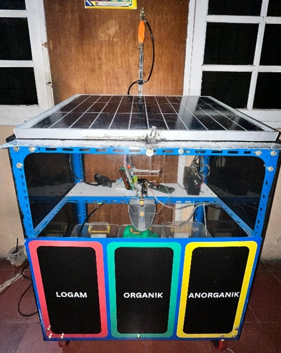
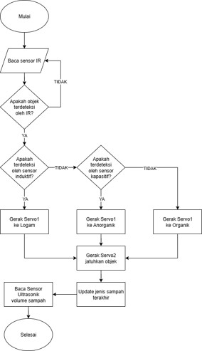
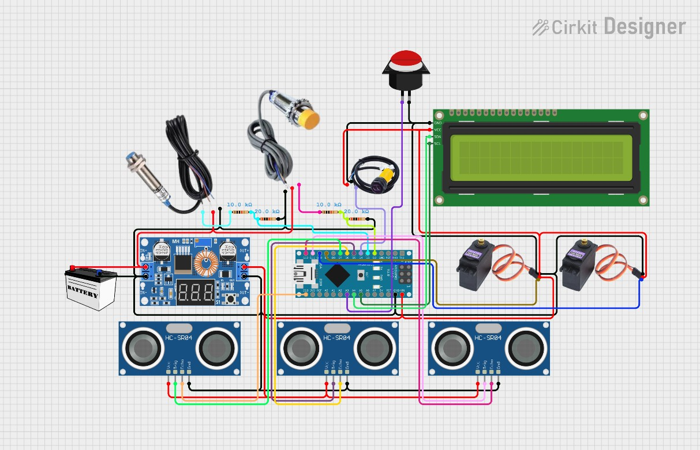
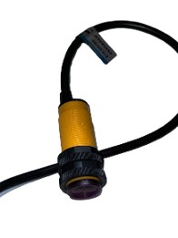
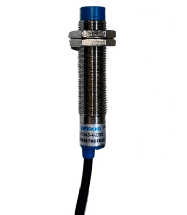
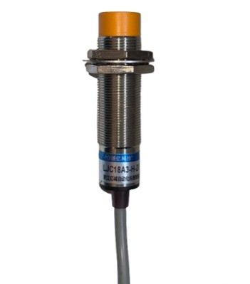
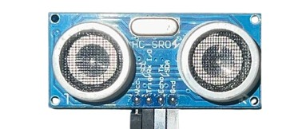
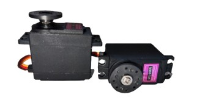
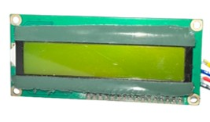
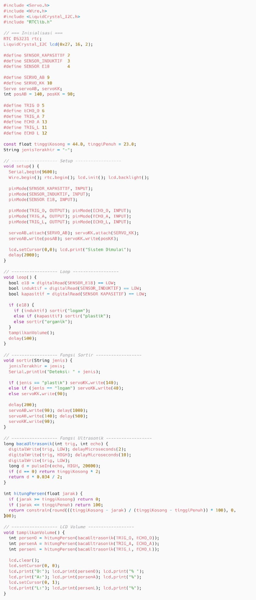

PROJECT 02
Smart Trash Sorter
Perancangan sistem pemilah sampah pintar dan deteksi volume sampah menggunakan Arduino Nano dengan beberapa sensor dan aktuator.
01
Overview
Project ini merupakan perancangan sistem pemilah sampah pintar menggunakan Arduino Nano sebagai pengendali utama. Sistem menggunakan beberapa sensor untuk membantu mengidentifikasi karakteristik sampah sebelum diarahkan ke tempat yang sesuai.
Sistem dilengkapi dengan sensor induktif untuk mendeteksi material logam, sensor kapasitif untuk mendeteksi material non-logam atau organik, serta sensor inframerah sebagai bagian dari proses deteksi. Tiga sensor ultrasonic digunakan untuk memantau tingkat volume pada masing-masing tempat sampah.
Proses pemilahan dilakukan menggunakan dua servo sebagai mekanisme pengarah sampah, sedangkan LCD 16×2 digunakan untuk menampilkan informasi sistem. Pengujian dilakukan pada sensor pemilah dan sistem deteksi volume untuk mengetahui keberhasilan fungsi masing-masing bagian.
02
Tujuan
Merancang dan merealisasikan sistem pemilahan sampah otomatis yang mengintegrasikan sensor kapasitif, induktif, inframerah, dan ultrasonik berbasis mikrokontroler Arduino Nano.
Menguji ketepatan sensor dalam mendeteksi jenis dan volume sampah.
Menampilkan informasi hasil sortir dan volume tempat sampah pada LCD 16×2 secara informatif.
03
Sistem & Perancangan
Sistem dirancang menggunakan Arduino Nano sebagai mikrokontroler utama. Sensor inframerah, induktif, dan kapasitif digunakan untuk mendeteksi keberadaan serta karakteristik sampah, sedangkan tiga sensor ultrasonik digunakan untuk mengukur volume pada masing-masing tempat sampah.
Hasil pembacaan sensor diproses oleh Arduino Nano dan digunakan untuk menentukan arah pemilahan melalui dua buah servo MG996R. Informasi jenis sampah dan volume tempat sampah ditampilkan menggunakan LCD 16×2 I2C.
| Komponen | Pin | Fungsi |
|---|---|---|
| Baterai / Adaptor DC 12V | Vin Step Down | Sumber daya utama sistem. |
| Step Down Converter (12V → 5V) |
VCC → Battery OUT → Vin Arduino |
Menurunkan tegangan dari sumber 12V menjadi 5V untuk Arduino dan sensor. |
| Sensor Inframerah E18-D80NK | VCC 5V, GND, D4 | Mendeteksi keberadaan sampah sebagai trigger awal. |
| Sensor Induktif LJ12A3-4-Z/BX | VCC 12V, GND, D3 | Mendeteksi sampah berbahan logam. |
| Sensor Kapasitif LJC18A3-H-Z/BY | VCC 12V, GND, D2 | Mendeteksi plastik atau material anorganik. |
| Servo Kiri-Kanan | VCC 5V, GND, D10 | Mengatur arah pemilahan sampah. |
| Servo Atas-Bawah | VCC 5V, GND, D9 | Mengatur posisi mekanisme pemilah. |
| HC-SR04 (Anorganik) |
VCC 5V, GND, TRIG D7, ECHO D13 |
Mengukur volume tempat sampah anorganik. |
| HC-SR04 (Organik) |
VCC 5V, GND, TRIG D5, ECHO D6 |
Mengukur volume tempat sampah organik. |
| HC-SR04 (Logam) |
VCC 5V, GND, TRIG D11, ECHO D12 |
Mengukur volume tempat sampah logam. |
| LCD 16×2 I2C |
VCC 5V, GND, SDA A4, SCL A5 |
Menampilkan informasi jenis sampah dan volume tempat sampah. |
| Push Button | GND, A3 | Mengganti mode tampilan LCD antara jenis sampah dan volume. |
04
Dokumentasi Sistem

Smart Trash Sorter
Dokumentasi keseluruhan sistem pemilah sampah pintar yang telah direalisasikan menggunakan Arduino Nano, sensor, servo, dan LCD 16×2.

Flowchart Sistem
Flowchart menggambarkan alur proses sistem mulai dari pembacaan sensor, identifikasi jenis sampah, proses pemilahan, hingga pembacaan volume tempat sampah.

Skematik Sistem
Skematik menunjukkan hubungan antara Arduino Nano, sensor, servo, LCD 16×2, push button, serta rangkaian catu daya yang digunakan pada sistem.
05
Dokumentasi Komponen

E18-D80NK
Digunakan untuk mendeteksi keberadaan sampah sebagai trigger awal proses pemilahan.

LJ12A3-4-Z/BX
Digunakan untuk mendeteksi material logam pada sampah.

LJC18A3-H-Z/BY
Digunakan sebagai bagian dari proses identifikasi material sampah.

HC-SR04
Tiga sensor digunakan untuk mengukur volume masing-masing tempat sampah.

Servo MG996R
Dua servo digunakan untuk mengatur mekanisme dan arah pemilahan sampah.

LCD 16×2 I2C
Digunakan untuk menampilkan informasi jenis sampah dan volume tempat sampah.
06
Implementasi Program

Program Sistem Pemilahan Sampah
Program digunakan untuk melakukan kalibrasi sensor dan aktuator agar dapat bekerja sesuai dengan tujuan sistem. Program juga mengatur pembacaan sensor, menentukan kategori sampah, mengendalikan pergerakan dua servo MG996R, serta menampilkan informasi sistem pada LCD 16×2.
07
Metode Pengujian
Pengujian Sensor Jenis Sampah
Pengujian dilakukan untuk mengetahui kemampuan sensor dalam mendeteksi karakteristik sampah sesuai dengan fungsi masing-masing sensor. Sensor inframerah digunakan untuk mendeteksi keberadaan sampah, sensor induktif untuk mendeteksi material logam, dan sensor kapasitif untuk membantu identifikasi material sampah.
Pengujian Sensor Volume
Tiga sensor ultrasonik HC-SR04 diuji untuk mengukur volume pada masing-masing tempat sampah. Hasil pembacaan sensor digunakan untuk mengetahui kondisi volume tempat sampah dan ditampilkan melalui LCD 16×2.
Pengujian Mekanisme Pemilahan
Pengujian dilakukan dengan memberikan sampah pada sistem dan mengamati respons dua servo MG996R. Pergerakan servo diamati untuk memastikan mekanisme pemilahan dapat bergerak sesuai dengan kategori sampah yang terdeteksi oleh sensor.
Pengujian Sistem Terintegrasi
Pengujian dilakukan dengan mengoperasikan seluruh bagian sistem secara bersamaan, mulai dari deteksi keberadaan sampah, identifikasi jenis sampah, pengendalian aktuator, hingga pengukuran volume tempat sampah dan tampilan informasi pada LCD 16×2.
08
Hasil Pengujian
Pengujian dilakukan untuk mengetahui kemampuan sensor dalam mendeteksi jenis sampah dan mengukur volume tempat sampah, serta memastikan mekanisme pemilahan dapat bekerja sesuai dengan rancangan sistem.
| Komponen | Hasil Pengujian | Keterangan |
|---|---|---|
| Sensor IR E18-D80NK | 80% | Mendeteksi keberadaan sampah, tetapi hasil dipengaruhi oleh warna dan permukaan objek, terutama pada objek berwarna hitam. |
| Sensor Induktif | 80% | Berhasil mendeteksi material logam sesuai skenario pengujian. |
| Sensor Kapasitif | 80% | Berhasil membantu mendeteksi material organik dan non-logam, tetapi dapat merespons material logam yang berada di sekitar sensor. |
| Sensor Ultrasonik HC-SR04 | 100% | Berhasil digunakan untuk mengukur volume masing-masing tempat sampah. |
| Sistem Pemilahan | Berhasil | Sistem berhasil mengintegrasikan sensor, Arduino Nano, dua servo MG996R, dan LCD 16×2 sesuai skenario pengujian. |
09
Project Summary
Smart Trash Sorter merupakan sistem pemilah sampah otomatis yang mengintegrasikan Arduino Nano, sensor inframerah, sensor induktif, sensor kapasitif, sensor ultrasonik, aktuator servo, dan LCD 16×2. Sistem dirancang untuk mendeteksi karakteristik sampah, mengarahkan proses pemilahan berdasarkan hasil pembacaan sensor, serta memantau volume masing-masing tempat sampah.
Berdasarkan hasil pengujian, sensor yang digunakan dapat menjalankan fungsi sesuai dengan perancangannya dengan tingkat hasil pengujian yang berbeda pada setiap sensor. Sensor ultrasonik menunjukkan hasil pengujian sebesar 100%, sedangkan sensor inframerah, induktif, dan kapasitif masing-masing menunjukkan hasil pengujian sebesar 80%. Sistem secara keseluruhan berhasil mengintegrasikan proses deteksi, pemilahan, pengukuran volume, dan tampilan informasi sesuai dengan skenario pengujian.
Logika Pemilahan Sampah
Sensor inframerah E18-D80NK mendeteksi keberadaan sampah sebagai trigger awal proses pemilahan.
Jika sensor inframerah, sensor induktif, dan sensor kapasitif mendeteksi objek, sampah dikategorikan sebagai sampah logam.
Jika sensor inframerah dan sensor kapasitif mendeteksi objek, sampah dikategorikan sebagai sampah organik.
Jika sensor inframerah mendeteksi objek sedangkan sensor induktif dan sensor kapasitif tidak mendeteksi objek, sampah dikategorikan sebagai sampah non-organik.
Hasil klasifikasi diproses oleh Arduino Nano kemudian diteruskan ke dua buah servo MG996R untuk mengatur mekanisme pemilahan sampah.